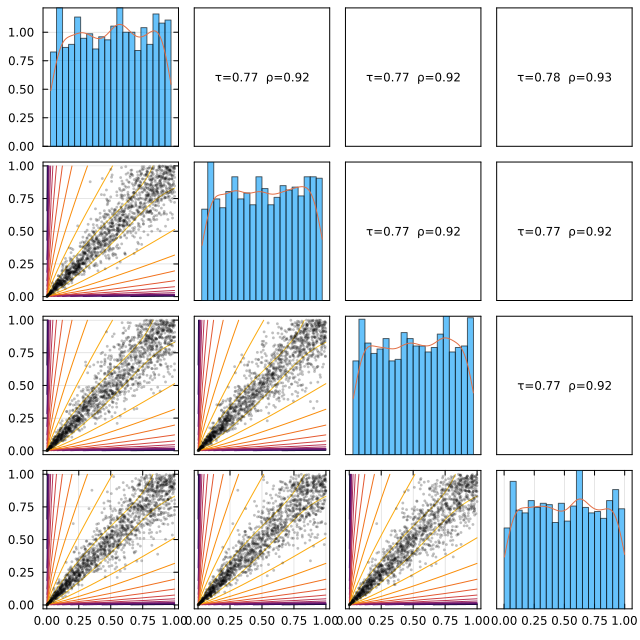
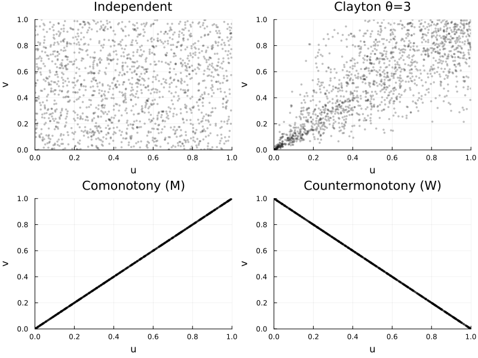
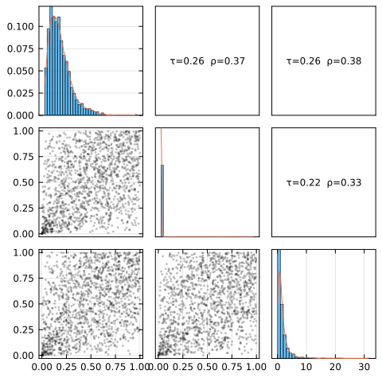
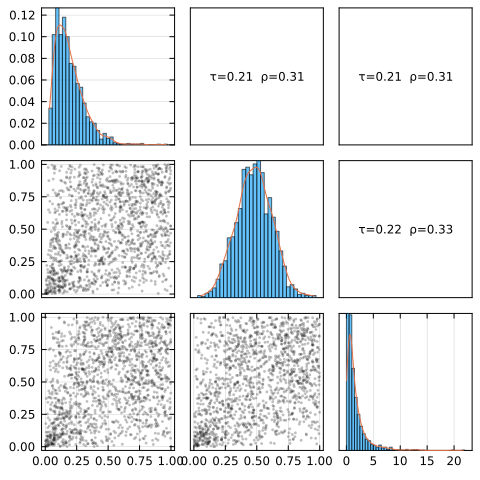

Getting Started
This section gives some general definitions and tools about dependence structures, multivariate random vectors and copulas. Along this journey through the mathematical theory of copulas, we link to the rest of the documentation for more specific and detailed arguments on particular points, or simply to the technical documentation of the actual implementation. The interested reader can take a look at the standard books on the subject [1–4] or more recently [5–8].
We start here by defining a few concepts about multivariate random vectors, dependence structures and copulas.
Reminder on multivariate random vectors
Consider a real valued random vector $\bm X = \left(X_1,...,X_d\right): \Omega \to \mathbb R^d$. The random variables $X_1,...,X_d$ are called the marginals of the random vector $\bm X$.
Recall that you can construct random variables in Julia by the following code :
using Distributions
X₁ = Normal() # A standard Gaussian random variable
X₂ = Gamma(2,3) # A Gamma random variable
X₃ = Pareto(1) # A Pareto random variable with infinite variance.
X₄ = LogNormal(0,1) # A Lognormal random variableWe refer to Distributions.jl's documentation for more details on what you can do with these objects. We assume here that you are familiar with their API.
The probability distribution of the random vector $\bm X$ can be characterized by its distribution function $F$:
\[\begin{align*} F(\bm x) &= \mathbb P\left(\bm X \le \bm x\right)\\ &= \mathbb P\left(\forall i \in \{1,...,d\},\; X_i \le x_i\right). \end{align*}\]
For a function $F$ to be the distribution function of some random vector, it should be $d$-increasing, right-continuous and left-limited. For $i \in \{1,...,d\}$, the random variables $X_1,...,X_d$, called the marginals of the random vector, also have distribution functions denoted $F_1,...,F_d$ and defined by :
\[F_i(x_i) = F(+\infty,...,+\infty,x_i,+\infty,...,+\infty).\]
Note that the range $\mathrm{Ran}(F)$ of a distribution function $F$, univariate or multivariate, is always contained in $[0,1]$. When the random vector or random variable is absolutely continuous with respect to (w.r.t.) the Lebesgue measure restricted to its domain, the range is exactly $[0,1]$. When the distribution is discrete with $n$ atoms, the range is a finite set of $n+1$ values in $[0,1]$.
Copulas and Sklar's Theorem
There is a fundamental functional link between the function $F$ and its marginals $F_1,...,F_d$. This link is expressed by the mean of copulas.
A copula, usually denoted $C$, is the distribution function of a random vector with marginals that are all uniform on $[0,1]$, i.e.
\[C_i(u) = u\mathbb 1_{u \in [0,1]} \text{ for all }i \in 1,...,d.\]
In this documentation but more largely in the literature, the term Copula refers both to the random vector and its distribution function. Usually, the distinction is clear from context.
You may define a copula object in Julia by simply calling its constructor:
using Copulas
d = 4 # The dimension of the model
θ = 7 # Parameter
C = ClaytonCopula(4,7) # A 4-dimensional clayton copula with parameter θ = 7.ClaytonCopula{4, Float64}(7.0,)This object is a random vector, and behaves exactly as you would expect a random vector from Distributions.jl to behave: you may sample it with rand(C,100), compute its pdf or cdf with pdf(C,x) and cdf(C,x), etc:
u = rand(C,10)4×10 Matrix{Float64}:
0.630101 0.0110249 0.933359 0.571079 … 0.76467 0.538921 0.819542
0.638496 0.00896206 0.937242 0.525192 0.524613 0.685675 0.790464
0.632473 0.0183695 0.934735 0.480133 0.814106 0.679703 0.748149
0.706029 0.00890235 0.979845 0.456879 0.758605 0.706427 0.85607cdf(C,u)10-element Vector{Float64}:
0.5332051474016816
0.007962131274668934
0.8567335789488956
0.4061125899093117
0.12230298388127188
0.35052819359941245
0.15072050641934617
0.5135744222856168
0.5089293468575283
0.6682577150446848You can also plot it:
using Plots
plot(C, :logpdf)
See [the visualizations page](@ref viz_page] for details on the visualisations tools. It’s often useful to get an intuition by looking at scatter plots. Below we compare independence, a positive dependence (Clayton), and the Fréchet bounds:
p1 = plot(IndependentCopula(2), title="Independent")
p2 = plot(ClaytonCopula(2, 3.0), title="Clayton θ=3")
p3 = plot(MCopula(2), title="Comonotony (M)")
p4 = plot(WCopula(2), title="Countermonotony (W)")
plot(p1,p2,p3,p4; layout=(2,2), size=(800,600))
One of the reasons that makes copulas so useful is the bijective map discovered by Sklar [9] in 1959:
For every random vector $\bm X$, there exists a copula $C$ such that
\[\forall \bm x\in \mathbb R^d, F(\bm x) = C(F_{1}(x_{1}),...,F_{d}(x_{d})).\]
The copula $C$ is uniquely determined on $\mathrm{Ran}(F_{1}) \times ... \times \mathrm{Ran}(F_{d})$, where $\mathrm{Ran}(F_i)$ denotes the range of the function $F_i$. In particular, if all marginals are absolutely continuous, $C$ is unique.
This result allows to decompose the distribution of $\bm X$ into several components: the marginal distributions on one side, and the copula on the other side, which governs the dependence structure between the marginals. This object is central in our work, and therefore deserves a moment of attention.
The function
\[\Pi : \bm x \mapsto \prod_{i=1}^d x_i = \bm x^{\bm 1}\]
is a copula, corresponding to independent random vectors.
The independence copula can be constructed using the IndependentCopula(d) syntax as follows:
Π = IndependentCopula(d) # A 4-variate independence structure.We can then leverage the Sklar theorem to construct multivariate random vectors from a copula-marginals specification. This can be used as follows:
MyDistribution = SklarDist(Π, (X₁,X₂,X₃,X₄))
MyOtherDistribution = SklarDist(C, (X₁,X₂,X₃,X₄))And the API is still the same:
rand(MyDistribution,10)4×10 Matrix{Float64}:
0.232473 -1.32865 -1.205 0.0379957 … -0.755263 -0.763658 -1.69574
4.5281 28.549 8.68056 6.63892 3.65426 3.85126 5.15982
2.46211 3.24006 12.1141 9.88217 1.10218 1.30315 1.45435
4.3823 1.41383 0.416144 1.21396 0.534477 1.48566 1.50084rand(MyOtherDistribution,10)4×10 Matrix{Float64}:
-0.485322 -0.180502 -0.56252 … 0.560802 -0.0667233 -0.855997
3.74643 5.13414 3.5303 9.24657 5.53899 2.2613
1.35635 2.03726 1.22138 5.42995 6.24063 1.28946
0.691461 0.985224 0.493785 2.28227 1.07517 0.523554Sklar's theorem can be used the other way around (from the marginal space to the unit hypercube): this is, for example, what the pseudo() function does, computing ranks.
Distributions.jl provides the product_distribution function to create independent random vectors with given marginals. product_distribution(args...) is essentially equivalent to SklarDist(Π, args), but our approach generalizes to other dependence structures and is thus much more powerful.
Copulas are bounded functions with values in [0,1] since they correspond to probabilities. But their range can be bounded more precisely, and [10] gives us:
For all $\bm x \in [0,1]^d$, every copula $C$ satisfies :
\[\langle \bm 1, \bm x - 1 + d^{-1}\rangle_{+} \le C(\bm x) \le \min \bm x,\]
where $y_{+} = \max(0,y)$.
The function $M : \bm x \mapsto \min\bm x$, called the upper Fréchet-Hoeffding bound, is a copula. The function $W : \bm x \mapsto \langle \bm 1, \bm x - 1 + d^{-1}\rangle_{+}$, called the lower Fréchet-Hoeffding bound, is on the other hand a copula only when $d=2$. These two copulas can be constructed through MCopula(d) and WCopula(2).
The upper Fréchet-Hoeffding bound corresponds to the case of comonotone random vector: a random vector $\bm X$ is said to be comonotone, i.e., to have copula $M$, when each of its marginals can be written as a non-decreasing transformation of the same random variable (say with $\mathcal U\left([0,1]\right)$ distribution). This is a simple but important dependence structure. See e.g.,[11, 12] on this particular copula. Note that the implementation of their sampler was straightforward due to their particular shapes:
rand(MCopula(2),10) # sampled values are all equal, this is comonotony2×10 Matrix{Float64}:
0.728506 0.517646 0.801458 0.759238 … 0.781351 0.912514 0.692499
0.728506 0.517646 0.801458 0.759238 0.781351 0.912514 0.692499u = rand(WCopula(2),10)
sum(u, dims=1) # sum is always equal to one, this is anticomonotony1×10 Matrix{Float64}:
1.0 1.0 1.0 1.0 1.0 1.0 1.0 1.0 1.0 1.0You can also visualize the strong alignment for M and the anti-diagonal pattern for W in the grid above.
Since copulas are distribution functions, like distribution functions of real-valued random variables and random vectors, there exists classical and useful parametric families of copulas. This is mostly the content of this package, and we refer to the rest of the documentation for more details on the models and their implementations.
Fitting copulas and compound distributions.
Distributions.jl's API contains a fit function for random vectors and random variables. We propose an implementation of it for copulas and multivariate compound distributions (composed of a copula and some given marginals). It can be used as follows:
using Copulas, Distributions, Random, Plots
# Construct a given model:
X₁ = Gamma(2,3)
X₂ = Pareto()
X₃ = LogNormal(0,1)
C = ClaytonCopula(3,0.7) # A 3-variate Clayton Copula with θ = 0.7
D = SklarDist(C,(X₁,X₂,X₃)) # The final distribution
simu = rand(D,1000) # Generate a dataset3×1000 Matrix{Float64}:
8.19939 2.1343 11.9421 3.87916 … 10.7357 13.4794 1.30332
3.57375 1.22826 2.50418 1.78743 2.51006 1.27115 3.80868
0.809841 2.0499 1.04868 1.39503 0.99701 2.36529 0.761462Let us first visualize our model:
plot(D)
Now try to fit it:
# You may estimate a copula using the `fit` function:
D̂ = fit(SklarDist{ClaytonCopula,Tuple{Gamma,Normal,LogNormal}}, simu)SklarDist{ClaytonCopula{3, Float64}, Tuple{Distributions.Gamma{Float64}, Distributions.Normal{Float64}, Distributions.LogNormal{Float64}}}(
C: ClaytonCopula{3, Float64}(0.6234611129007408,)
m: (Distributions.Gamma{Float64}(α=2.0646914752462533, θ=2.977257253470461), Distributions.Normal{Float64}(μ=21.62509896861806, σ=479.83936285530604), Distributions.LogNormal{Float64}(μ=-0.01152174433031227, σ=1.0184685841379948))
)
We see on the output that the parameters were correctly estimated from this sample. More details on the estimator, including, e.g., standard errors, may be obtained with more complicated estimation routines. For a Bayesian approach using Turing.jl, see this example. Let's vizualize the result:
plot(D̂)
Distributions.jl documentation states that:
The fit function will choose a reasonable way to fit the distribution, which, in most cases, is maximum likelihood estimation.
The results of this fitting function should then only be used as "quick-and-dirty" fits, since the fitting method is "hidden" to the user and might even change without breaking releases. We embrace this philosophy: from one copula to the other, the fitting method might not be the same.
Going further
This documentation aims to combine theoretical information and references to the literature with practical guidance related to our specific implementation. It can be read as a lecture, or used to find the specific feature you need through the search function. We hope you find it useful.
The package contains many copula families. Classifying them is essentially impossible, since the class is infinite-dimensional, but the package proposes a few standard classes: elliptical, archimedean, extreme value, empirical, vines...
Each of these classes more or less corresponds to an abstract type in our type hierarchy, and to a section of this documentation. Do not hesitate to explore the bestiary !
- [1]
- H. Joe. Multivariate Models and Multivariate Dependence Concepts (CRC press, 1997).
- [2]
- U. Cherubini, E. Luciano and W. Vecchiato. Copula Methods in Finance (John Wiley & Sons, 2004).
- [3]
- R. B. Nelsen. An Introduction to Copulas. 2nd ed Edition, Springer Series in Statistics (Springer, New York, 2006).
- [4]
- H. Joe. Dependence Modeling with Copulas (CRC press, 2014).
- [5]
- J.-F. Mai, M. Scherer and C. Czado. Simulating Copulas: Stochastic Models, Sampling Algorithms, and Applications. 2nd edition Edition, Vol. 6 of Series in Quantitative Finance (World Scientific, New Jersey, 2017).
- [6]
- F. Durante and C. Sempi. Principles of Copula Theory (Chapman and Hall/CRC, 2015).
- [7]
- C. Czado. Analyzing Dependent Data with Vine Copulas: A Practical Guide With R. Vol. 222 of Lecture Notes in Statistics (Springer International Publishing, Cham, 2019).
- [8]
- J. Größer and O. Okhrin. Copulae: An Overview and Recent Developments. WIREs Computational Statistics (2021).
- [9]
- A. Sklar. Fonctions de Repartition à n Dimension et Leurs Marges. Université Paris 8, 1–3 (1959).
- [10]
- T. Lux and A. Papapantoleon. Improved Fréchet-Hoeffding Bounds on $d$-Copulas and Applications in Model-Free Finance, arXiv:1602.08894 math, q-fin.
- [11]
- R. Kaas, J. Dhaene, D. Vyncke, M. J. Goovaerts and M. Denuit. A Simple Geometric Proof That Comonotonic Risks Have the Convex-Largest Sum. ASTIN Bulletin: The Journal of the IAA 32, 71–80 (2002).
- [12]
- L. Hua and H. Joe. Multivariate Dependence Modeling Based on Comonotonic Factors. Journal of Multivariate Analysis 155, 317–333 (2017).